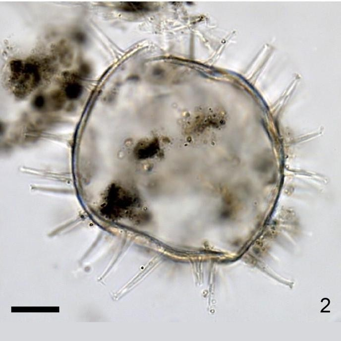
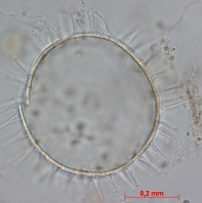
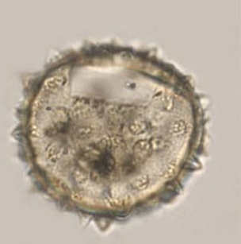
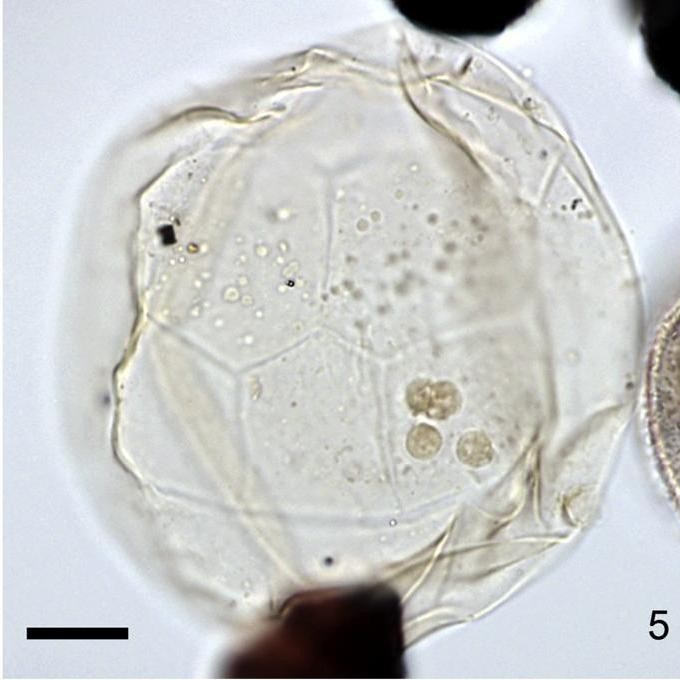

CYSTS LIST
TRANSPARENT SOLID PROCESSES COMPARATION
Surface |
Shape |
Remarks |
Species |
Central body (um.) |
Process (um.) |
Image |
Transparent |
Spherical |
Solid processesNot acuminate, branched or conical |
Biecheleriabaltica | 20 to 30 |
Small |
|
Brown to darkRarely transparent. |
Spherical |
Solid processesSmall rounded archeopyle |
Biecheleriacincta | 13 to 17 |
0.5 to 1 |
|
GranularTransparent |
Spherical toegg-shaped |
Solid processesFibrous base |
Operculodiniumaguinawense | 34.5 to 69 (D) |
8 to 16.7 (L) |
 |
GranularTransparent |
Spherical to subspherical |
Hollow to fibrousAcuminate or capitateTips minutely hooked. |
Operculodiniumcentrocarpum | 32 to 59.5 (D) |
0.5 to 17.5 (L) |
|
Fibroreticulate spongyTransparent |
Spherical |
Minutely expanded distal fibrous tipsFibrous wall |
Operculodiniumcrassum | 54 to 74 (D) |
8 to 17 (L) |
|
Fibroreticulate spongyTransparent |
Rounded-polyhedral |
Hollow processesSize/process ratio |
Operculodiniumgiganteum | 74 to 86 (D) |
2 to 4 (L) |
|
FibroreticulateTransparent |
Spherical |
Hollow to fibrousMany tips processesSize |
Operculodiniumisraelianum | 38 to 69 (D) |
3 to 10 (L) |
 |
GranulateTransparent |
Spherical |
Hollow to fibrousVery smooth base of processes |
Operculodiniumjanduchenei | 27 to 38 (D) |
4 (L) |
 |
MicrogranularTransparent |
Spherical |
Solid processesAcuminate or bifidFewer processes |
Operculodiniumlongispinigerum | 27 to 42 (D) |
5 to 14 (L) |
|
Dense net-like structure |
Spherical to subspherical |
Solid processesHook-like branchesRoot-like base |
Operculodiniummicrotriainum | - |
- |
|
Scabrate to microgranulate |
Ovoidal |
Solid processesShort and capitate processes |
Operculodiniumpiaseckii | 34 to 39 (D) |
2 to 4 (L) |
|
Reticulate to perforate supported by columellae |
Spherical |
Hollow and expanded basesSmall platforms with irregular margin tips |
Operculodiniumtegillatum | 25 to 45 (D) |
3.5 to 9 (L) |
|
SmoothTransparent |
Spherical to subspherical |
Solid processesBases joined by low septa |
Pentapharsodiniumdalei | 19 to 36 (D) |
1 to 8 (L) |
|
Smooth, spongy-fibrous luxuria appearing loosely granularTransparent |
Spherical |
Solid. FibrousExpanded baseUsually minutely. |
Pentaplacodiniumsaltonense | 46 to 71 (D) |
1 to 5.7 (L) |
|
SmoothHyaline |
Elongated, rounded-cylidnrical to peanut-shaped |
Acicular. TaperWide basePointed distal tipShort size |
Polarellaglacialis | 12 to 17 (L)8 to 15 (W) |
2.7 to 4.2 (L) |
|
Finely granulateTransparent |
Spherical |
Hollow to fibrousSingle or clustersDistally open with minutely aculeate distal margins. |
Polysphaeridiumzoharyi | 40 to 84.8 (D) |
2 to 21 (L) |
|
TransparentScattered granules or columellae |
Spherical |
Rounded archeopyleHollow processesSlender and distally open |
Atlanticodinium striaticonulum | 25.5 to 59.5 (D) |
0.5 to 17.5 (L) |
|
TransparentSmooth to granulate |
Spherical |
Translucent outer layer |
Capisocysta lata | 40 to 56 (D) |
- |
|
TransparentSmooth to shagreenate or scabrate |
Spherical |
Diaphanous equatorial flangeIrregular margin |
Desotodinium wrennii | 47 to 67 (D) |
- |
 |
TransparentLight brown to yellowishDarker brown with greenish granules w living |
Spherical |
HollowBarrel-shapedCan be distally connected. |
Tuberculodinium vancampoae | 63 to 113 um. (D) |
- |
|